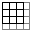
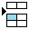
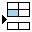
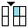
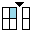
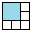
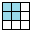

進階
工具及設定
顯示符號工具列
手寫筆設定
簽核工具列設定
自動備份設定
參考公文設定
預排流程
簽辦意見
簽辦意見窗格
啟用文字編輯工具列
啟用自動開啟下一筆公文
下一筆公文啟用進階模式
50%
符合視窗
符合寬度
原尺寸
-
+
追蹤修訂模式
完稿模式
分會設定
決行
剔退
傳送
退承辦人
儲存
關閉
流程設定
預排流程
設定
設定
傳送對象
預排流程
簽辦意見
簽辦意見窗格
簽辦意見
儲存
關閉
核決
剔退
預排流程
傳送
關閉
檔
案
功
能

插入表格

插入上方列

插入下方列

插入左方欄

插入右方欄

合併儲存格

分割儲存格
刪除列
刪除欄
刪除表格
B
N
9pt
10pt
11pt
12pt
13pt
14pt
16pt
18pt
20pt
22pt
24pt
26pt
28pt
30pt
32pt
36pt
1.0
1.1
1.2
1.3
1.4
1.5
1.6
1.7
1.8
1.9
2.0
齊上
置中
齊下
靠左對齊
置中
靠右對齊
基本資料
新增稿件
附件管理
參考公文
參考附件
簽閱附件
第
頁，共
頁
尋找目標：
Aa
取代為：
搜尋
取代
全部取代
取代所有稿件
關閉
類型
簽核資訊
文字內容
簽辦意見
錯別字校正
內部意見
全部接受
全部拒絕
設定
錯別字校正
錯
拒絕
50%
符合視窗
符合寬度
原尺寸
-
+
歷史檢視
關閉
檔
案
功
能
基本資料
類型
簽核資訊
文字內容
指定檢閱頁面
請選擇欲檢閱的頁面：
取消
確定
設定自訂範本
類別：
新增
請輸入新增類別的名稱：
請設定自訂範本的名稱：
取消
確定